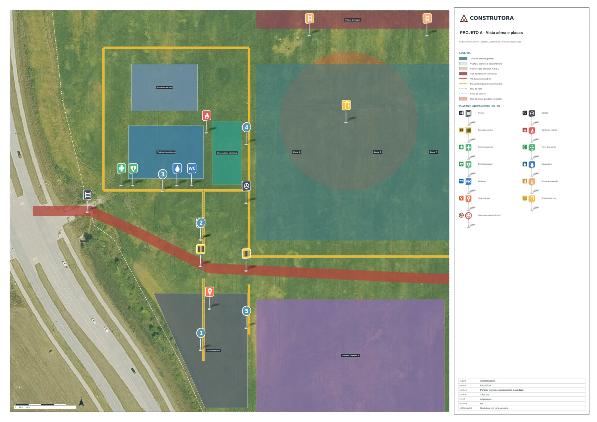
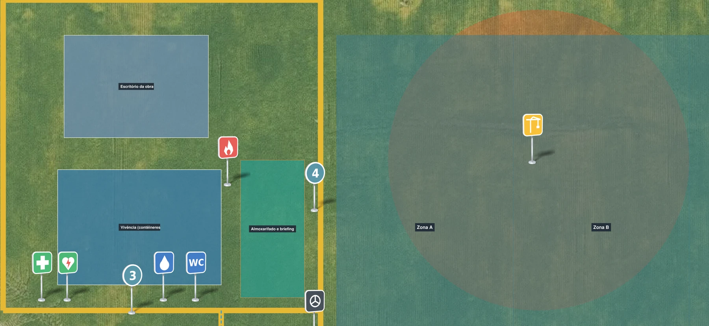
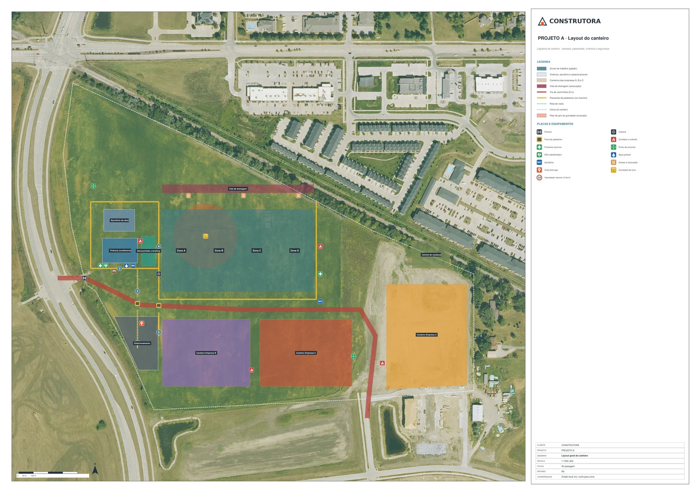
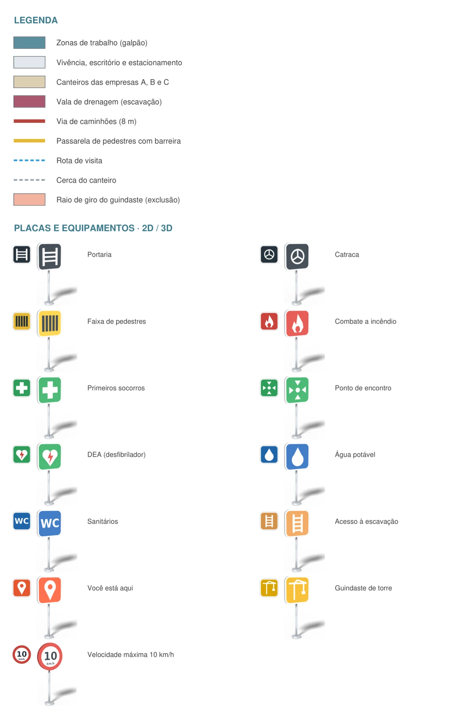
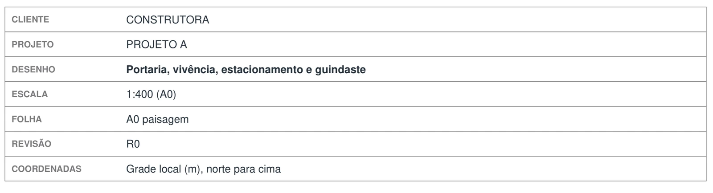

Passo 03 de 04 · Pranchas A0 do canteiro
Do layout do editor às pranchas A0 editáveis no Bluebeam
Você preenche os campos entre colchetes (projeto, cliente, revisão, escalas, recorte e pasta), aponta o GeoJSON que saiu do editor e voltam duas pranchas A0 em PDF, o layout geral e a vista aérea com as placas em 3D (em 2D, se não houver Blender), com cada guindaste, placa e legenda como marcação solta que o Bluebeam seleciona e move.
# PEDIDO Exporta as pranchas do layout que fiz no editor em A0 paisagem, tudo editável no Bluebeam. Uma delas com a foto aérea de fundo e as placas em 3D. # CONTEXTO O botão PDF do editor vai só até A1: as pranchas A0 saem por script, a partir do features.geojson, não pelo botão. Este comando precisa de um chat que execute código e grave arquivos (ex.: Python com uma biblioteca de PDF que escreva anotações e camadas, como PyMuPDF). Se o seu chat não executa código, diga isso na primeira linha da resposta e não diga que gerou as pranchas: entregue em texto a lista do que iria em cada prancha (markups, camadas, legenda, carimbo) e a parte de pendencias.md. As placas em 3D da prancha 2 saem do Blender, rodando por script em background. Sem Blender, use as placas em 2D na prancha 2 e registre em pendencias.md com o motivo "Blender não disponível". O layout do canteiro foi desenhado no editor do comando anterior. Agora são as pranchas para imprimir e para a equipe marcar por cima num editor de PDF como o Bluebeam. Nome do projeto: [NOME DO PROJETO — ex.: PROJETO A]. Cliente: [CLIENTE — ex.: CONSTRUTORA]. Revisão: [REVISÃO — ex.: R0]. Escalas: [ESCALAS — ex.: 1:1000 na prancha 1 e 1:400 na prancha 2]. Recorte da prancha 2: [RECORTE — ex.: portaria, vivência, estacionamento e guindaste]. # ENTRADA - features.geojson: o layout exportado do editor (Export GeoJSON), em metros locais (X leste, Y norte), uma feição por elemento, com id, name, layer, kind, week e caption; o guindaste traz o raio de giro em radius_m. - ortofoto.jpg: a foto aérea do terreno, na [PASTA — ex.: ./canteiro], a mesma dos comandos 1 e 2 (é a que meta.ortho indica). Posicione a foto sob o GeoJSON pelo retângulo que ela cobre, meta.ortho_bbox_m ([xmin, ymin, xmax, ymax] em metros locais), e pelo metro por pixel, meta.gsd_m. Se o GeoJSON não trouxer essas chaves, pergunte. Se faltar o features.geojson, pare e peça. Não redesenhe o layout a partir de print ou de memória. # TAREFA Gere duas pranchas A0 paisagem (1189 × 841 mm), folha branca fora da foto (a ortofoto fica só dentro do recorte, como markup travado), as duas a partir do mesmo features.geojson. 1. Prancha 1, layout geral: o canteiro inteiro na escala da prancha 1, sobre a ortofoto. 2. Prancha 2, vista aérea e placas: o recorte na escala da prancha 2, com a ortofoto de fundo e, no lugar de cada ponto de placa ou equipamento, a placa renderizada em 3D. Renderize cada tipo de placa uma vez no Blender (PNG com fundo transparente) e coloque como carimbo (Stamp) no ponto. A placa 3D segue o mesmo símbolo da legenda 2D. Em cada prancha: - Carimbo neutro: cliente, projeto, desenho, escala, folha, revisão e coordenadas (ex.: "Grade local (m), norte para cima"). Sem "generated by", sem campo de frame, sem fundo colorido, sem notas soltas. - Norte e escala gráfica. - Legenda completa: tudo o que aparece na prancha está na legenda (áreas, linhas e cada tipo de placa e equipamento). Na prancha 2, a legenda mostra cada placa em 2D e em 3D. - Rótulo na área, não no ícone que está dentro dela. - Texto que não cabe quebra linha. Nada sai da folha. - Ortofoto como fundo trocável: um markup de imagem travado, em camada própria, com uma nota dizendo como destravar. Tudo editável no Bluebeam: - Cada elemento do GeoJSON vira um markup: área em Polygon ou Square, linha em PolyLine, ponto em Stamp, texto em FreeText. - Áreas e linhas: Subject = nome do elemento (name), nota = o caption. Placas e equipamentos (Stamps): Subject = o tipo (ex.: "Combate a incêndio"), nota = o nome do elemento. Em todos, o id do GeoJSON fica no nome interno do markup. - Camadas do PDF (a camada é o tipo do elemento), mais fundo, moldura, rótulos, carimbo e legenda, para ligar e desligar. - Legenda, quadros, nomes e carimbo também são markups editáveis, não desenho achatado. - Texto com fonte, tamanho e cor gravados no próprio markup, para não mudar de cor ou formato quando alguém editar no Bluebeam. # REGRAS 1. Só entra o que está no features.geojson. Elemento que você não sabe desenhar ou posicionar não some calado: vai para pendencias.md com o id e o motivo. 2. Nada de cidade, endereço, nome de pessoa ou data no carimbo, nos rótulos e nos metadados do PDF. Título e autor dos metadados só com o nome do projeto e o cliente dos campos acima. 3. A escala escrita no carimbo bate com a escala gráfica e com o desenho: 1 m do GeoJSON vira a medida certa na folha. 4. Não invente placa, medida ou raio que não esteja no GeoJSON. # SAÍDA - [PASTA]/prancha01_layout_A0.pdf - [PASTA]/prancha02_vista-aerea_A0.pdf - [PASTA]/pendencias.md: o mesmo arquivo dos outros comandos (o comando 4 lê); é acumulado. Leia, não apague nem renumere as entradas anteriores e acrescente ao fim as deste comando, com prefixo PR- (PR-01, PR-02...) e situação ABERTA, SUPOSIÇÃO ou RESOLVIDA (com data e fonte). - Na resposta, em poucas linhas: quantos markups e camadas tem cada prancha e o que ficou pendente. # CHECAGEM ANTES DE ENTREGAR Reabra os PDFs gravados e confira: - Página A0 paisagem, fundo branco, as camadas aparecem com os nomes certos. - Todo elemento do GeoJSON que cai na folha tem um markup, com Subject e nota. - Num editor de PDF: selecione um markup, mova, edite o texto. O texto não muda de cor nem de formato. - Meça a escala gráfica contra uma distância conhecida do GeoJSON (ex.: o raio de giro do guindaste). - Todo símbolo da prancha está na legenda. - Metadados sem nome de pessoa, cidade ou data.
O que ele resolve
O layout mudou no editor, só que a obra precisa também dos PDFs pra imprimir. E prancha que sai como imagem chapada não deixa ninguém mexer: o guindaste andou, é redesenhar a folha inteira de novo.
Aqui o prompt lê o features.geojson do passo 2 e devolve duas pranchas A0 paisagem nas escalas que você preencher (no exemplo, 1:1000 e 1:400), com 148 e 143 marcações soltas, legenda e carimbo inclusive; pra isso ele precisa de um chat que execute código, e as placas em 3D saem do Blender: sem ele, vão em 2D e a falta fica anotada em pendencias.md. E ele recusa o atalho: só entra o que está no GeoJSON, o que ele não sabe posicionar vai pra pendencias.md em vez de sumir calado, e carimbo, rótulos e metadados do PDF saem sem cidade, endereço, nome de pessoa ou data. A marcação vermelha que aparece no vídeo não é do prompt, é a equipe marcando por cima, como já faz.
O que ele devolve










Saída real · 2 pranchas A0 em PDF editável · Abertas no Bluebeam · Dados fictícios (PROJETO A)
Macete(ando o apocalipse)
- Esse processo tende a ser mais preciso depois que você configurar as skills e agentes. Te explico como fazer essas coisas na nossa newsletter, o Campo Minado. Só clicar aqui.
- O engenheiro da nova geração é, acima de tudo, responsável. Lembre-se que IA pode cometer erros. Use ela como um facilitador, não como verdade definitiva. O prompt organiza e explicita o cálculo — quem responde pelo número continua sendo você.
- A escala do carimbo (1:1000 numa folha, 1:400 na outra) só vale impressa em A0 no tamanho real. Impressora em "ajustar à página" encolhe tudo sem avisar, então mede a escala gráfica com régua na primeira cópia antes de alguém sair cotando em cima do papel.
- A prancha com as placas em 3D é um recorte, não o canteiro inteiro: aqui ficaram de fora a zona D e dois dos canteiros das empresas. Se a folha vai sozinha pra parede, deixa claro que ela é o detalhe e que o geral é a outra prancha.
- Mexer na prancha não mexe no layout. Arrastou o guindaste no Bluebeam, o editor do passo 2 continua com ele no lugar antigo e a próxima exportação desfaz o que você fez. Mudança de layout se faz no editor e exporta de novo; no PDF a equipe só marca.
- O carimbo sai com a revisão que você escreveu em
[REVISÃO], e ela não sobe sozinha. Toda vez que o layout mudar, troca o campo antes de exportar de novo, senão a obra imprime duas folhas R0 diferentes e ninguém sabe qual vale. - Caixa de revisão vermelha escrita REVISAR TRAVESSIA não resolve travessia. Quem libera pedestre cruzando a via de caminhão é a segurança do trabalho, não o Bluebeam, né.
Cada passo usa o canteiro do anterior
Esse é só um dos prompts que uso no meu dia a dia pra ganhar mais tempo livre.
Posto isso e muito mais no Instagram.